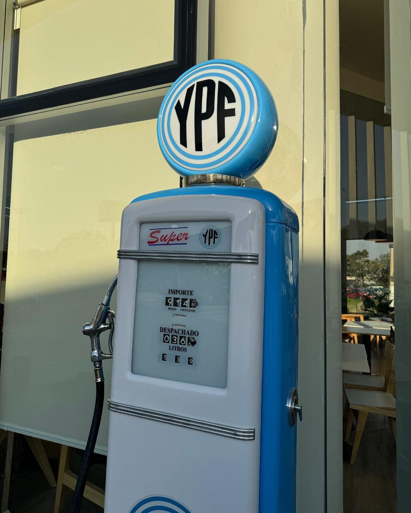

QR
Pagos ágiles
La experiencia está pensada para usar App YPF, medios digitales, tarjetas y beneficios ServiClub.
Servicios
GeoGas Tucumán integra carga de combustible, GNC, Full, Boxes, App YPF, ServiClub, estacionamiento y atención para viajes urbanos o de ruta.

La experiencia está pensada para usar App YPF, medios digitales, tarjetas y beneficios ServiClub.
Full permite resolver café, desayuno, almuerzo rápido, bebidas y productos para seguir viaje.
Boxes suma diagnóstico y mantenimiento preventivo para continuar con más tranquilidad.

Identidad YPF
La estética de GeoGas combina la imagen moderna de YPF con detalles de identidad visual que refuerzan la experiencia de estación: luz, señalética clara, espacios vidriados y una circulación pensada para el cliente.